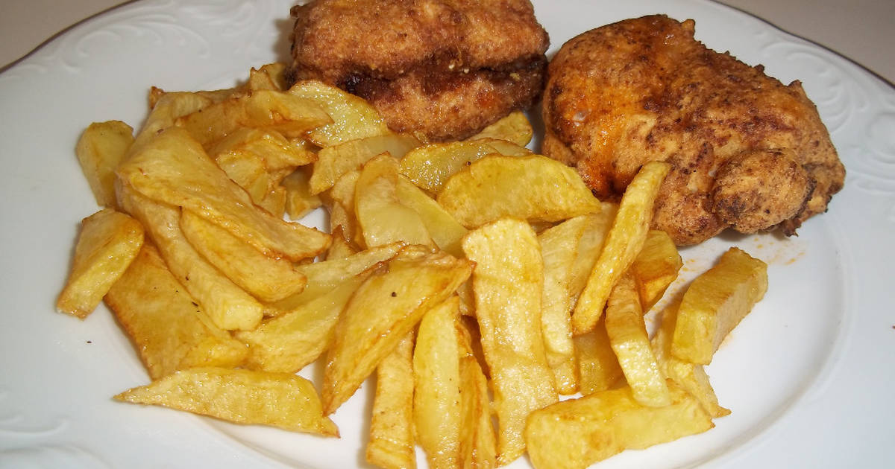

PECHUGAS DE POLLO VILLAROY CASERAS

Ingredientes
- Pechugas de pollo
- 50 g de mantequilla
- 70 g de harina
- 2 vasos leche
- 20 g de queso
- Sal
- Nuez Moscada
- Aceite
- Pan rallado
- Huevo
Elaboración (Pasos)
- Lo primero que haremos sera hervir con agua, sal y laurel las pechugas de pollo, aproximadamente durante 5 minutos.
- Una vez pasado este tiempo escurrimos y dejamos enfriar..
- En una sartén rehogamos la mantequilla con la harina y vamos regando con leche, removemos con unas varillas y dejamos que espese.
- Sazonamos con sal y una ralladura de nuez moscada. Echamos queso y removemos dejando unos minutos mas.
- Introducimos las pechugas en la salsa y cubrimos bien, y dejamos enfriar en la nevera.
- Sacamos e introducimos las pechugas en huevo batido y posteriormente en pan rallado.
- Ponemos abundante aceite en una sartén o freidora e introducimos las pechugas empanadas y freímos hasta que estén doradas y crujientes.
- Vamos sacandolas de la sartén y las ponemos en papel absorbente para quitar todo el aceite sobrante.
Y listas para disfrutar, nosotros las hemos acompañado con unas ricas patatas fritas.